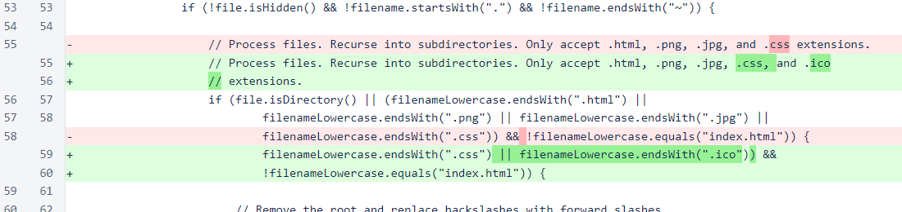
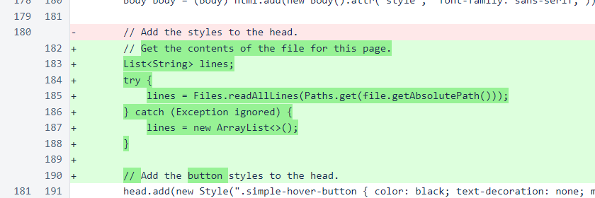
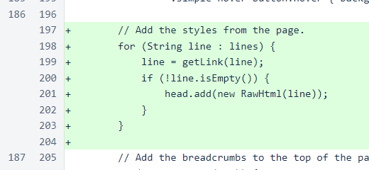
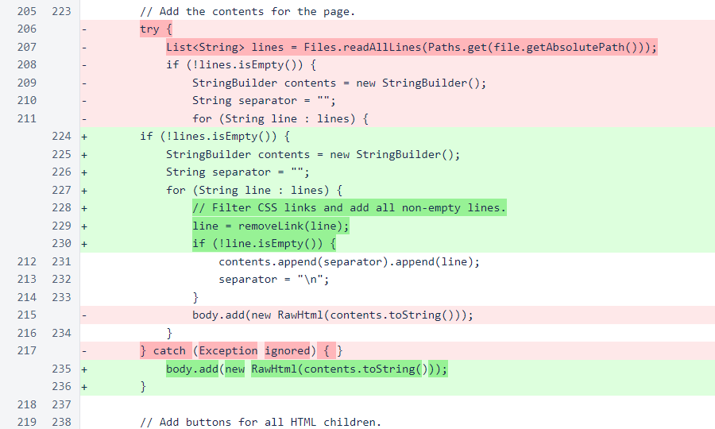
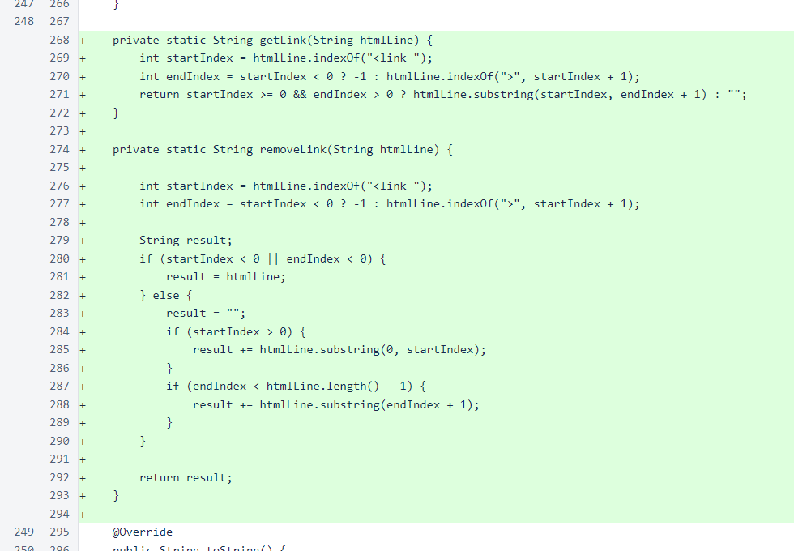
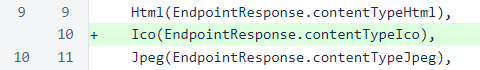
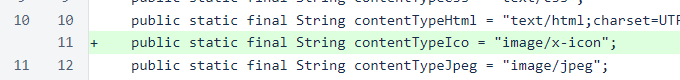
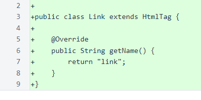

Nyzo version 557 (commit on GitHub) adds .ico file support and improves handling of stylesheets in the documentation server.
This version affects the documentation server only.
In DocumentationController, files with .ico extensions are now processed.
In DocumentationEndpoint.determineType(), the .ico extension is now processed.

In DocumentationEndpoint.renderByteArrayForHtml(), the content of the page is now read earlier in the method. This allows the link elements for external stylesheets to be moved from the body to the head.
All link elements from the file are added to the head.
All link elements are removed when building the body from the file.
The getLink() and removeLink() methods assist with transferring link elements from the body to the head. Note that these methods are incredibly naïve. If a link is on multiple lines, if multiple links are on one line, or if other elements are on the same line as the link, the results of these methods will likely be undesirable. However, the controlled nature of the documentation repository allows such simple, fragile logic to be used without concern.
The Ico value has been added to the DocumentationEndpointType enumeration.
A contentTypeIco constant has been added to the EndpointResponse class.
The Link class has been added for structuring link HTML elements. This class was used in an earlier implementation of the process that moves link elements to the head. While that process was rewritten before this release, this class was left in this version, as it will likely be useful in the near future.
